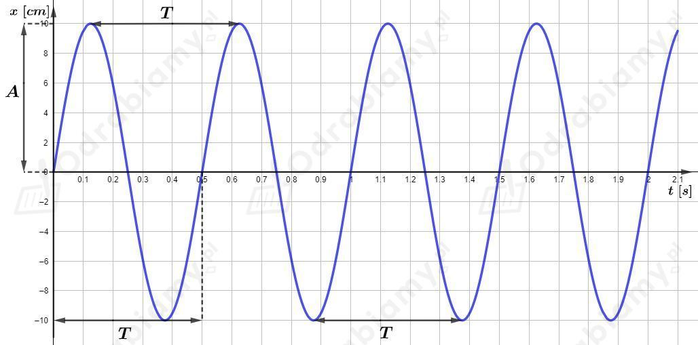
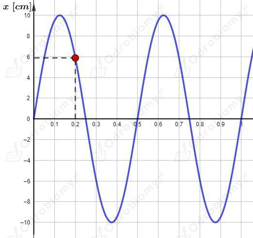

W próżni nie ma ośrodka sprężystego, dlatego nie mogą w niej rozchodzić się fale mechaniczne - np. dźwięk. Fale elektromagnetyczne - np. światło, nie potrzebują ośrodka do rozchodzenia się dlatego mogą rozchodzić się próżni.
Odp. C. może się rozchodzić światło, ale nie dźwięk.
A. mikrofale - II. telefonia komórkowa
Mikrofale należą do fal radiowych wykorzystywanych m. in. w łączności.
B. podczerwień - IV. promieniowanie rozgrzanego garnka
Rozgrzane ciała wypromieniują energię w postaci promieniowania podczerwonego.
C. ultrafiolet - I. solarium
Promienie UV przy kontakcie z naszą skórą powodują zachodzenie procesów chemicznych, które obserwujemy jako opalanie.
D. promieniowanie rentgenowskie - III. prześwietlenie przy złamaniu kości.
Promieniowanie X jest wytwarzane w aparacie rentgenowskim.
Amplituda drgań wahadła to największe wychylenie z położenia równowagi. Z wykresu dołączonego do zadania, z osi odczytujemy:
Okres drgań wahadła to czas, w którym wahadło wykonuje jedno pełne drganie. Z wykresu odczytujemy go jako odcinek czasowy pomiędzy najbliższymi punktami wykonującymi taki sam ruch drgający. Np. punkty w maksymalnych wychyleniach w górę lub w dół, albo punkty będące w położeniach równowagi, których ruch następuje w górę lub których ruch następuje w dół.
Rysunek pomocniczy do zadania:

Częstotliwość drgań wahadła wyznaczymy jako odwrotność okresu :
Rysunek pomocniczy do zadania:

a)
Rozpatrujemy chwilę czasową - ciężarek znajduje się w położeniu .
Wiemy, że w kolejnej chwili czasowej ciężarek znajduje się w położeniu równowagi - .
Zatem ciężarek musi poruszać się w dół w stronę położenia równowagi.
b)
Siła wypadkowa działająca na ciężarek jest zawsze skierowana w stronę położenia równowagi. Ciężarek znajduje się powyżej położenia równowagi, zatem siła wypadkowa jest skierowana w dół.
c)
Ciężarek porusza się w dół i działająca na niego siła wypadkowa jest również skierowana w dół. Zatem ciężarek porusza się ruchem jednostajnie przyspieszonym. Prędkość ciężarka rośnie.
Zygmunt może doprowadzić do zwiększenia amplitudy drgań dzwonu dzięki zjawisku rezonansu mechanicznego. Jeżeli będzie popychał dzwon siłą z odpowiednią częstotliwością to energia dzwonu będzie wzrastała i dzwon będzie wykonywał drgania o coraz to większej amplitudzie.
Okres drgań wahadła sprężynowego jest tym dłuższy im większa jest masa ciężarka.
Okres drgań wahadła sprężynowego jest tym dłuższy im mniejszy jest współczynnik sprężystości sprężyny.
a)
Wahadła mają taką samą masę.
Sprężyna wahadła nr 1 ma mniejszy współczynnik sprężystości od sprężyny wahadła nr 2.
Zatem dłuższy okres drgań ma wahadło nr 1.
b)
Współczynniki sprężystości dla obu wahadeł są takie same.
Wahadło nr 3 ma większą masę od wahadła nr 2.
Zatem dłuższy okres drgań ma wahadło nr 3.
Dane:
Szukane:
Rozwiązanie:
Drogę jaką musi przebyć światło ze Słońca do Ziemi wyrazimy jako:
Wyznaczmy czas jaki potrzebuje światło na dotarcie do Ziemi:
Odp. C.
Dane:
Prędkość dźwięku w powietrzu przyjmujemy jako:
Szukane:
Rozwiązanie:
Prędkość fali wyrażamy jako:
Wyznaczmy długość tej fali dźwiękowej: